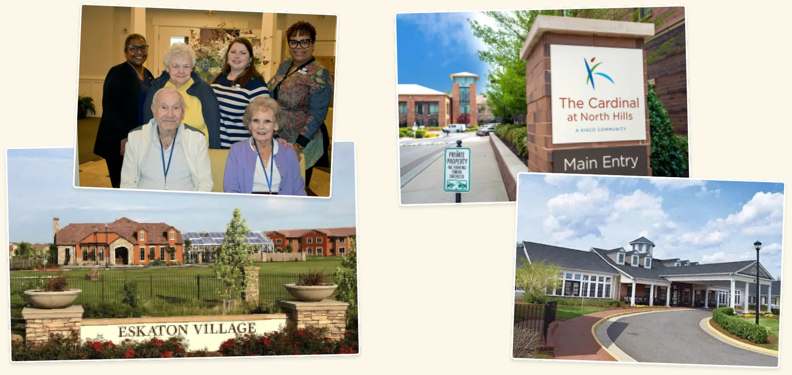
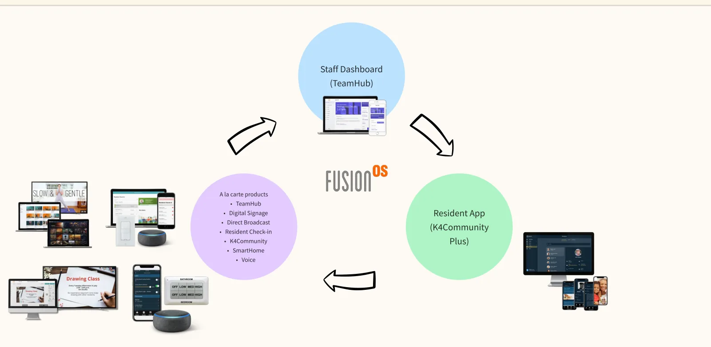
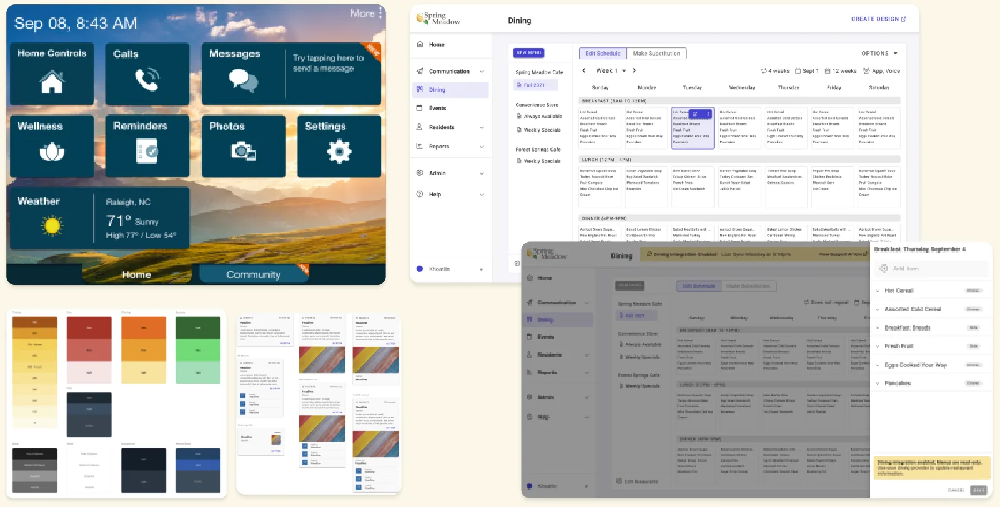

Before the research, we started from assumptions about the three sides of the marketplace.
Emily, 68, resident. Retired. Lives with her husband, who has dementia. Her oldest child lives nearby, and her other two live in other states. She sold her house to pay for senior care.
Savannah, 56, staff. Has worked here for six years. Spends most of her day on her feet checking on residents, with little time at a computer. Passionate about resident care. Prints everything.
Mark, 49, executive. Owns 11 communities under his brand, all at different levels. Struggles to keep marketing and branding consistent across them. Losing ground to a rising community in his state.
The research
Research on the floor
I spent many months shadowing residents and staff, and speaking with executives at both high-end and lower-end communities.
Each stakeholder had different goals and challenges, and every community worked differently, even ones under the same parent company.

Some of the communities where I shadowed residents and staff.
The research
Three stakeholders, different needs
Residents read community content, talk with staff, and give feedback. They want to live as independently as possible, keep up with events, make friends, and stay close to loved ones. Printed material goes out of date fast, new residents can get isolated, and it can be hard to find a staff member to help.
Staff manage content, residents, and prospective customers. They want more time with residents and more efficient processes. Every piece of content has to be made, scheduled, printed, and handed out, printing is expensive and dates quickly, changes are hard to share in real time, and turnover is high.
Executives set processes, manage services for staff, and listen to resident feedback. They want communities that look consistent but feel distinctive, and fewer siloed systems. Most communities have no professional staff to create assets, residents expect more technology and amenities for the cost, and too many vendors make everything expensive and hard to manage.
The journey
A day in the community
I mapped a typical day for residents, staff, and executives, from morning check-ins and medication rounds to meals, events, appointments, and evening security checks.
A typical resident, staff, and executive day, side by side.The journey
Where we saw the most opportunity
Digitize content. It cuts print spending and makes information real time and easy to edit.
Build a mobile version of the staff dashboard. Staff can be on the floor instead of at their desks.
Dining matters most. It's the most important amenity: the social point for residents three times a day, and the most work for staff to coordinate and communicate.
Bring smart-home technology into living spaces to help with activities of daily living.
The plan
One suite, sold à la carte
The problem: how do we solve for all three stakeholders, and how do we sell it?
TeamHub, the staff dashboard
K4Community Plus, the resident app
Digital Signage and Direct Broadcast
Resident Check-in
SmartHome and Voice
Communities could pick the products that fit their needs, or subscribe to a package.

The suite: a staff dashboard, a resident app, and à la carte products in between.
The plan
What success looked like
Communities choose the products that fit their needs, à la carte or as a package.
Staff spend less time at the computer, and can talk with residents or update content in real time from wherever they are.
Residents are safer, with smart-home technology to help day to day, and can always reach staff from wherever they are.
Design principles: accessibility is key. Simple and minimal is best. Make it as error-proof as possible. Make it secure.
What happened
Shipped as one suite
The suite shipped across mobile apps, web apps, and Amazon Alexa voice products, built on one design system for staff, residents, and executives.
Status: shipped.

Sample screens from the design system and products.